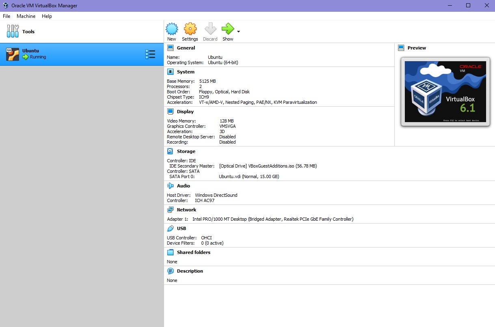
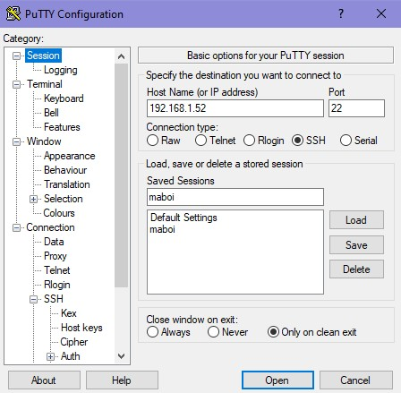
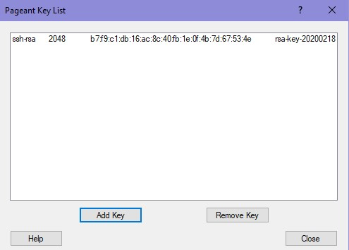

1. Найти и подключиться к бесплатной системе оказалось трудно,
поскольку подобные сервера либо уже не работают,
либо перестали быть бесплатными.
Пришлось работать с виртуальной машиной.

2. В качестве SSH клиента был выбран PuTTY.
Имя хоста - ip адресс виртуальной машины, ключи сгенерированны в PuTTYgen,
приватный ключ добавлен в Pageant. Публичный ключ добавлен в .ssh/authorized_keys.

